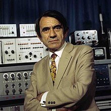

Surgimento da música Eletrônica
A música eletrônica que conhecemos hoje começou a ser desenvolvida quando o músico francês Pierre
Schaeffer, em 1948, passou a unir instrumentos diferentes e gravações de toca-discos em uma única música, fazendo
surgir posteriormente as mixagens sonoras.
Schaeffer fazia ainda o que os DJs de hoje utilizam como recurso, que é modificar os sons através da manipulação
da velocidade ou alternância no sentido da gravação original.
Em 1951, a música eletrônica passou a emergir na Alemanha e ali foi criado o primeiro estúdio totalmente dedicado a este
tipo de som. Os alemães Werner Meyer-Eppler, Robert Beyer e Herbert Eimer foram responsáveis por esse projeto, mas diferente
dos franceses que utilizavam objetos sonoros e instrumentos para criarem esses sons, eles desenvolviam suas técnicas através
de osciladores elétricos.
A popularização da música eletrônica no mundo se deu com o surgimento dos sintetizadores digitais, mas foi a partir do uso de
softwares e computadores pessoais que o ritmo virou febre. Graças a esses equipamentos, passou a ser possível utilizar recursos
de áudio e emular funcionalidades próprias de instrumentos musicais ou de sintetizadores.

Pierre Schaeffer
|